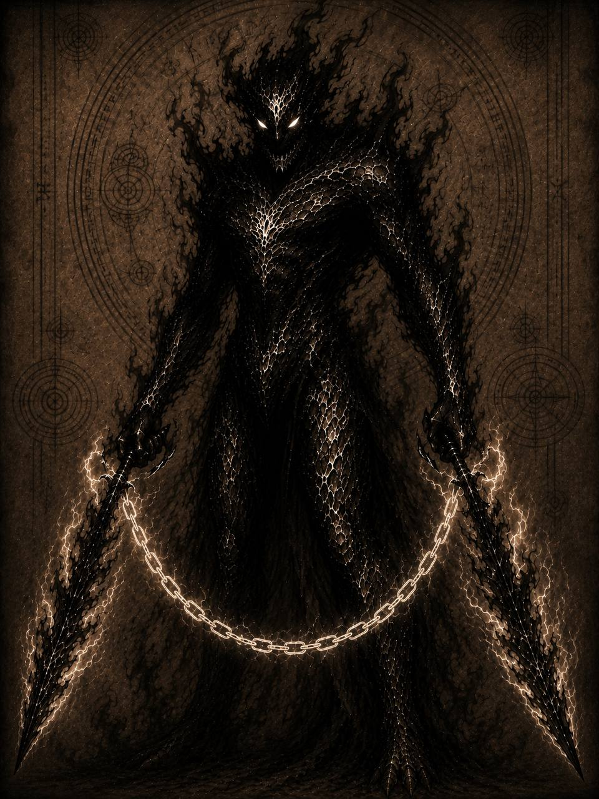

Дайн
Сорген является уникальным представителем народа докаинов. В отличие от большинства своих сородичей, объект не был намеренно создан Дариусом и не проходил обычную процедуру превращения в дайна.
Появление Соргена произошло случайно во время мощного энергетического выброса. Объект сформировался уже усиленным, обладая одновременно чёрной и белой энергией.
Главной особенностью Соргена стало отсутствие внутренней зависимости от Дариуса. Он не ощущал безусловной необходимости подчиняться королю и воспринимал себя отдельным существом, способным самостоятельно выбирать собственную сторону.
С первых часов жизни объект проявлял вспыльчивость, самолюбие и стремление доказать превосходство над обычными докаинами. Статус дайна он считал достаточным основанием для получения власти и особого отношения.
В отличие от Аркона, Эрла и Лиенны, Сорген не считал собственную жизнь принадлежащей Дариусу. Преданность остальных дайнов казалась ему болезненной зависимостью и добровольным отказом от права выбора.
Сорген представляет угрозу критического уровня. Объект обладает всеми базовыми способностями докаина, усиленными энергетической структурой дайна.
Он одновременно управляет чёрной и белой энергией. Это позволяет использовать тёмную материю для укрытия и дальних атак, а белую — для создания оружия, способного повреждать других докаинов.
Основным оружием Соргена являются два белых меча, соединённых чёрными энергетическими цепями.
Длина цепей практически не ограничена. Объект способен бросать клинки на большое расстояние, возвращать их обратно, менять траекторию и атаковать из-за препятствий.
Все называли его предателем.
И, пожалуй, были правы.
Но прежде чем осуждать его, стоит вспомнить одну простую вещь.
Сорген прожил всего несколько часов, когда его впервые попросили умереть.
Он выбрал жизнь.
А всё, что произошло после, стало ценой этого выбора.
Если ты дочитал это досье до конца, значит хотел узнать, кем был этот докаин.
Но архивы умеют хранить лишь факты.
Истинную историю всегда приходится искать между строк.